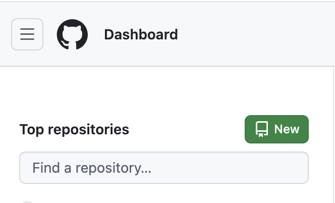
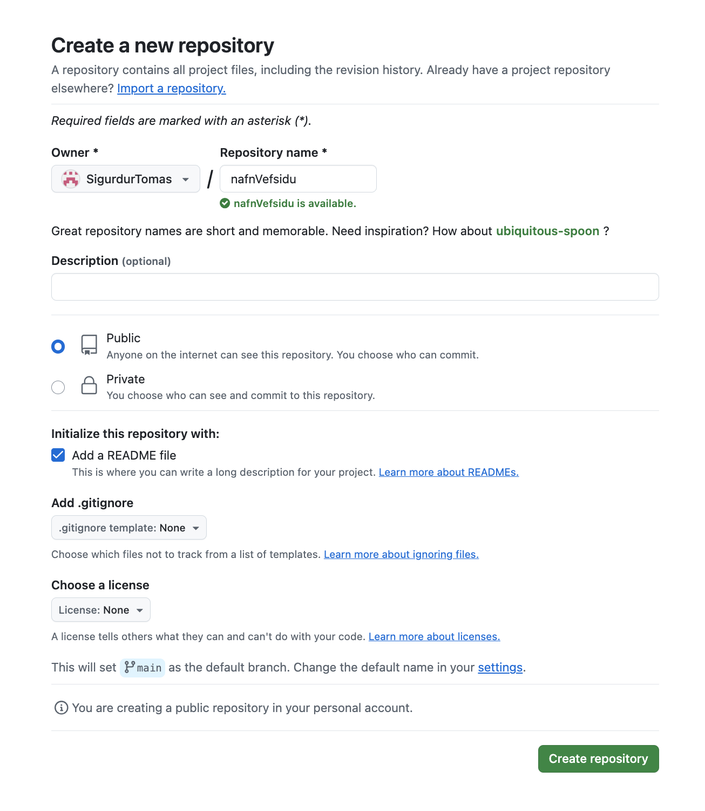
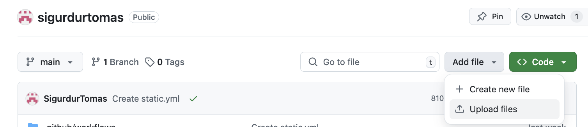
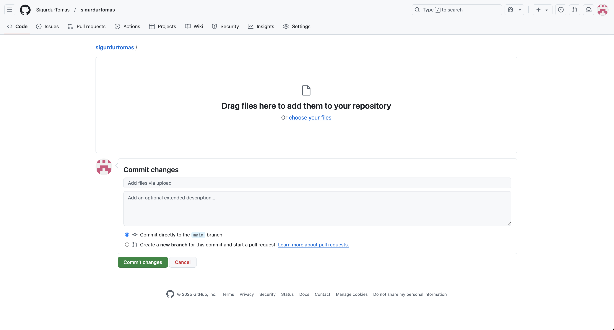
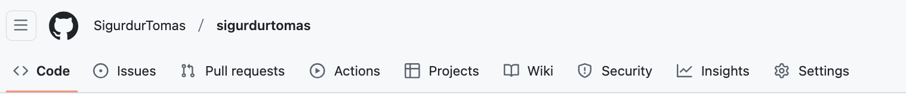
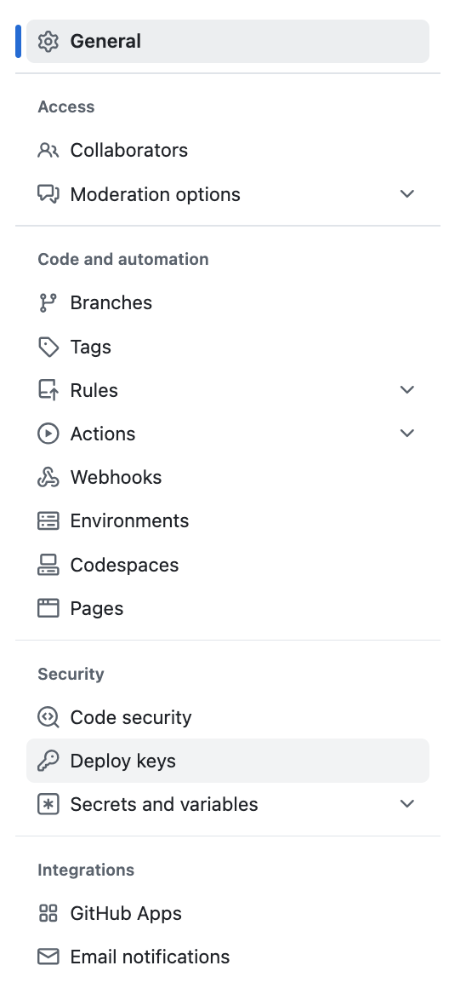
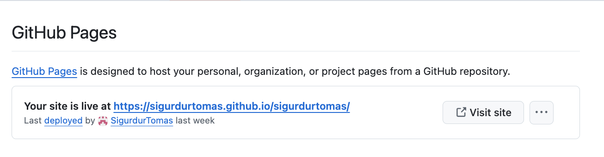

Verkefni 1
Gögnin sem voru notuð
Fyrst byrjaði ég á því að kynna mér verkefnið með því að horfa á YouTube myndband sem var í verkefnalýsingunni. Einnig sótti ég mér template af html5up. Ég valdi template sem heitir Hyperspace því mér fannst það skipulagt og hentar vel verkefninu. Ég hafði aldrei kóðað í HTML áður svo ég sótti hjálp frá vinum mínum sem eru í tölvunarfræði í HÍ og þeir hjálpuðu mér að nota github.
Að nota github og git
Fyrst byrjaði ég að setja upp github fyrir vefsíðuna og er hægt að sjá skrefin til að gera vefsíðu í myndum hér fyrir neðan:
fyrsta skref
Þegar þú ert búinn að gera aðgang að github er þessi dálkur uppi í vinstra horninu og þú einfaldlega smellir á new og þá opnast næsta síða.
annað skref
Þegar þessi síða er opin þá getur þú valið nafnið á vefsíðunni þinni undir Repository name. Ég setti nafnVefsidu í þessu sýnidæmi. Passa skal að vefsíðan er Public annars kemst enginn nema þú inn á vefsíðuna. Einnig bætti ég við README file. Svo þegar það er komið þá getum við ýtt á Create repository.
þriðja skref
Svo til að geta sett kóðan á vefsíðunni í github þurfum við að ýta á add file og svo upload file. Einnig væri hægt að gera create new file en þá þurfum við að gera allan kóðan aftur svo einfaldast að uploada kóðanum sem við erum búin að gera.
fjórða skref
Þegar þú ert kominn á þessa síðu smelliru á choose your files og þá opnast finder ef þú ert í macOS eða file explorer ef þú ert á windows. Svo dregur þú bara möppuna sem inniheldur vefsíðunni inn og ýtir svo á commit changes og þá er kóðinn að vefsíðunni kominn inn á github.
Fimmta skref
Til að vera viss að vefsíðan okkar sé virk þurfum við að fara í settnigs
Sjötta skref
Svo þegar þú ert kominn í settings þurfum við að opna Pages
Sjöunda skref
Þar sjáum við að vefsíðan mín er virk og einnig sjáum við vefslóðina til að komast inn á vefsíðuna okkar. Til að fara inn á vefsíðuna smellum við á visit site og vefsíðan okkar opnast í nýjum glugga.